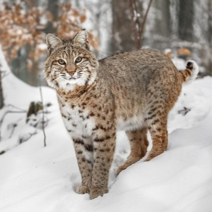

Habitat Connectivity Mapping
What is Habitat Connectivity?
Habitat connectivity is the measure of how easily wildlife can move between wilderness area. It is important because it increases wildlife access to habitat, even when it is not possible to increase protected land. This has significant consiquences for biodiversity, species persistance in an area, and facilitating genetic exchange between species subpopulations. In this project, I map and analyze the habitat connectivity for Bobcats moving from the Adirondacks to the Green or Taconic Mountains.
Study Area
 The Green/Taconic Mountains and the Adirondacks are both part of their own large scale wilderness areas, but between them are a lot of barriers for wildlife movement. Lake Champlain stretches down through most of Vermont, and then past that there is Lake George, Great Sacandaga Lake, and a series of dense urban areas. Given these barriers, I wanted to identify the paths wildlife would most likely be taking between these two areas and simultaniously identify the places where habitat expansion and resoration would be most value for connectivity.
The Green/Taconic Mountains and the Adirondacks are both part of their own large scale wilderness areas, but between them are a lot of barriers for wildlife movement. Lake Champlain stretches down through most of Vermont, and then past that there is Lake George, Great Sacandaga Lake, and a series of dense urban areas. Given these barriers, I wanted to identify the paths wildlife would most likely be taking between these two areas and simultaniously identify the places where habitat expansion and resoration would be most value for connectivity.
Study Species

Methods
 To answer the question of where Bobcats are most likely to travel between the Adirondacks and the Green/Taconic Mountains, I created a cost surface model of the entire study area and then conducted a least cost path analysis. The general work flow can be seen to the right.
To answer the question of where Bobcats are most likely to travel between the Adirondacks and the Green/Taconic Mountains, I created a cost surface model of the entire study area and then conducted a least cost path analysis. The general work flow can be seen to the right.
The cost surface model is a replication of the expert opinion model created by Reed et al. (2017) with adjustment made from a literature review. The four main inputs are land cover, road lines, elevation, and stream lines. These were processed and then rescaled from 0 to 10 where 0 represents areas where Bobcats can easily move, and 10 represents the most difficult terrain for Bobcats to navigate. These four layers were then combined with a weighted sum to produce the final cost surface. These operations were strung to gether using the model builder in QGIS so that I could edit parameters as needed.
The final cost surface consisted of a 10m x 10m raster layer with values ranging from 0 to 10. With this landscape model I could then use a least cost path algorithm to find the paths that had the smallest cummulative cost of moving, either direction, from a point in the Adirondack Park to a selection of points in the Green/Taconic Mountains that were all equidistant from that point in the Adirondacks.
Results

The least cost path analysis revealed the most likely corridors for Bobcat movement between the Adirondacks and the Green Mountains. The analysis highlighted two choke points where wildlife movment is likely funneled: between Lake George and Glens Falls and between Glens Falls and Saratoga Springs. These are likely areas where there are is a higher concentration of Bobcats, and thus these areas should be high priority for protecting wildernes areas and expanding usable habitat.
To futher investigate the characteristics of the least cost path, I analyzed the existing conservation areas along the corridor and the land cover of a 1 mile buffer of the least cost path.


The least cost path travels from between Glens Falls and Saratoga Springs. Outside of the Adirondack park, only about 9% of the buffered area is conserved. Increasing habitat and protected area in this corridor should be a high priority as it will have the most impact on increasing regional scale habitat connectivity. Additionally, this analysis reveals the need for planners to consider wildlife crossings of Interstate 87 which goes north/south between Glens Falls and Saratoga Springs. This might be done through the construction of overpasses, underpasses or critter shelves in culverts to allow safe passage for wildlife.